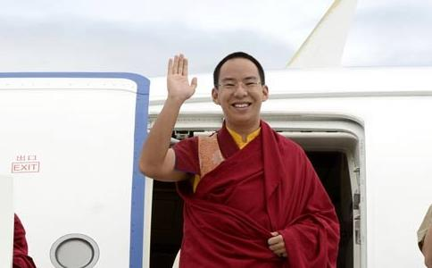

“拿我来说，刚出生以后，甚至在娘胎里边就受到（念
这是坚赞诺布15岁时回忆自己对于
这位被称为“最牛90后”的青年大活佛，在五分之一个世纪的
1989年1月9日，十世班禅离开北京去日喀则，主持五世至九世班禅遗体合葬灵塔祀殿开光大典。多日操劳令十世班禅的身体出现不适，6天后的晚上8点16分，十世班禅圆寂。
1989年5月14日，国务院批准成立
后来，坚赞诺布的母亲桑吉卓玛回忆说，坚赞诺布8个月大时，被发现舌上的纹路组成的是一个藏文字母，发音是“a（阿）”，它在藏传佛教中代表佛的
当寻访人员根据观湖和占卦预示，寻访到嘉黎县时，很快就打听到了有灵异特征的坚赞诺布。寻访人员发现，这孩子常做出吹螺、讲经的姿势，和他哥哥在一起时，还喜欢给哥哥摸顶。
当时，还有一个细节。母亲担心坚赞诺布的口吃，会影响高僧的判断。而生钦活佛反而非常高兴地说，这就是非常独特的征兆，小孩口吃不是后天卫生环境不好引起的，这是因为从班禅洛桑确朗时期就如此，度母还说确认班禅灵童的秘密的征兆，是小时候应该有一点口吃。
于是，当时5岁的坚赞诺布，被确定成为三名金瓶掣签的灵童之一。
最神圣 金瓶掣签和坐床1995年11月29日，认定十世班禅大师转世灵童的金瓶掣签仪式在大昭寺释迦牟尼像前，严格按照藏传佛教仪轨举行。
那是个地冻霜寒的日子。宗教界人士、相关政府工作人员、记者，都在等待那一神圣的时刻。经过谨慎检查灵童的名单验签无误封签后，由波米•强巴洛卓活佛掣签。
参加了仪式的前新华社西藏分社社长如此回忆那天的场景：“大殿内，上千双眼睛盯着波米活佛的手。波米活佛合十祈祷了一会儿，用手指顺时针方向轻轻拨动露出金瓶口的3支名签。然后手指一停，毫不犹豫地掣出一支签来，交给江村罗布。“
江村罗布打开封套，看了一下名签，大声宣布：“嘉黎县的坚赞诺布中签！”此时，全场欢声雷动。
1995年11月29日凌晨5点27分，5岁男童坚赞诺布开始了不一样的人生。
十天后的12月8日，在浑厚有力的诵经声中，侍僧把十一世班禅抱起，在一侧照护的国务院代表李铁映伸手轻轻地把十一世班禅扶坐上法床。班禅正式坐床。
最刻苦 学经习文坐床后，班禅入住扎什伦布寺，高僧和经师为他专门制订了佛学修习计划。
学生时代，班禅每天清晨六点半起床，拜
据采访过班禅的《中国西藏》杂志记者吴祎回忆，班禅每天都要看《新闻联播》，之后开始学习藏文，练习书法，预习、复习汉文和英文等其他文化课。晚上9点15分，又是一次集体诵经的时间，班禅身边的僧人都聚了过来，一直要持续一个小时。可以说，比普通高中生的晚自习还紧张。
这样的勤学和聪慧使得班禅很小就掌握了很多佛学和宗教礼仪知识。1999年6月24日，他在扎什伦布寺，首次为全寺600多名僧人举行了长寿灌顶。班禅时而手摇法铃，时而拿起金刚杵，边咏诵边讲解，两个小时后经文才咏诵完毕。年纪小小的他，却将这1万多字的经文如行云流水般一气背诵完而无一差错。
最好奇 兴趣多多不仅是佛学，班禅还如同很多男孩一样，是个“科技迷”。在他的书房里，有大量介绍科学技术知识的科普著作。
2003年秋，班禅在青藏铁路建设基地南山口乘上通往西藏的轨道车。其间，他一定要到驾驶室里听驾驶员讲解如何操作，问问那些仪表都起什么作用。
据说，班禅还很喜欢到科技馆看“神州5号”的模型，琢磨琢磨它的原理。
最童趣 喂小羊偶尔，少年班禅也会流露出孩子气的一面。
1999年6月，曾有一位牧民将一只野生小黄羊送给班禅。他喂它吃，看它睡，跟它一起在新宫的草坪上嬉戏。哪知野生小黄羊没几天就死了，这令班禅伤心至极。
最温情 敬师长爱家人 从小就离家在寺里
班禅立刻回答：“那当然是我的父亲，如果没父亲的话，不可能生下我。这个不能够忘记父母的恩。如果忘了父母的恩，就不符合人性了。”
班禅还有个哥哥，和活佛弟弟的关系很好，“大儿子在学习中间有些什么困难，有些什么问题从来不给我们说，给活佛说”，班禅父亲说。
班禅对于师长和身边的人也尊敬关爱有加。有一次，中国藏学研究中心宗教所副所长、研究员豆格才让给班禅翻译。那天，由于活动时间很长，中间休息时，班禅亲手拿了一瓶水递给他，向他表示慰问，令他觉得很温暖。
班禅的身边人员回忆了2012年一幕动人的场景：那天下着雨，从颇章的饭厅到班禅的住所之间，有二三十米露天的距离，班禅把伞递给了一位老师，他自己则冲进了雨里。
在回忆起已经圆寂的两位恩师波米活佛和噶钦次仁时，班
随着班禅佛学造诣日益精深，威望与日俱增，为信众灌顶摸顶成为他作为大活佛重要的宗教活动。
外出时，他的车队经常需要停下很多次，以满足信众摸顶赐福的愿望。有时等待摸顶的信众队伍会长达几公里。最长的一次，他连续坐了10个小时给信众摸顶。从坐床继位至今，班禅为信众摸顶已经超过150万人次。
汶川、雅安、玉树、鲁甸地震发生以后，班禅都亲自主持了为遇难同胞举行的祈福法会，而且每次都独诵
2010年2月，班禅当选为中国佛协副会长，这是他担任的首个社会职务，并于同月被增补为全国政协委员，成为中国首个“90后”委员。而他更惊艳的一次亮相，则是2009年3月在第二届世界佛教论坛上。
在论坛开幕式上，班禅用英文发表演讲，震惊了与会的世界各地佛教界人士。新华社国际先驱导报以《班禅英文演说震撼世界》为题进行报道。西藏僧众称其“已现大活佛风范”。香港《大公报》也评论称，在本届论坛上，年仅19岁的十一世班禅出人意料地频频亮相，成为备受各方瞩目的“头号明星”。
班禅的英语功底要归功于他的勤学苦练。他一周至少要上两节英语课，每节1个半小时。
最真实 不爱吃25岁的班禅，已经成长为睿智的宗教领袖，但同时他也有着普通青年的平凡生活。
跟随班禅的侍僧说，班禅和其他男孩子一样，不怎么爱吃青菜，对肉也不是特别感兴趣，也不喝碳酸类的饮料。
班禅也喜欢看电视剧，尤其喜欢历史题材的，比如《少年康熙》；有一阵子，他还研读了《民主改革50年》。平时，他也会跟身边人谈奥运会、世界杯，议论以巴冲突、伊拉克形势、日本核电站，谈他在各地参观游历的感受。
如同很多90后大男孩一样，班禅喜爱运动，经常和身边的工作人员一起打篮球。他也会用手机上网，或是玩一些电脑游戏，甚至尝试过网购。但据说班禅“自律能力很强”，并不是“网瘾少年”。
最难忘 受三代国家领导人接见被称为“最强90后”，并不仅仅因为班禅具有深厚佛学修为，广受信众爱戴，还因为他得到了江泽民、胡锦涛和习近平三代领导人的亲切接见和亲自勉励。
2015年6月，在西藏自治区成立50周年前夕，习近平在中南海接见了十一世班禅。习总书记向他提出了三个希望：希望班禅继承藏传佛教爱国爱教的光荣传统，胸怀祖国，心系人民，坚定不移维护祖国统一和民族团结。要积极开展教义阐释，弘扬藏传佛教教义中的扬善抑恶、平等
2005年2月，胡锦涛在人民大会堂接受了当时15岁的班禅的拜见。据工作人员介绍，回来不久，班禅就在自己的电脑上写了了一篇文章，题为《永志不忘的拜见》。
更早一些的1996年1月12日，江泽民在中南海接受十一世班禅和扎什伦布寺致谢团的拜见。据当时的记者回忆，“他（班禅）在拜见江泽民时，双手高举哈达，双目仰视，十分准确地将哈达献至江泽民主席手上，尔后又伸出细嫩地双手紧紧握住他的手。入座后，他面向江主席，双手合十，使在场的人无不暗暗称奇。那一年，十一世班禅
慈悲而聪慧，谦恭又温厚，博学且阳光，这就是青年大活佛班禅。他用自己的一言一行，演绎着真正的佛者智慧，领袖风范。